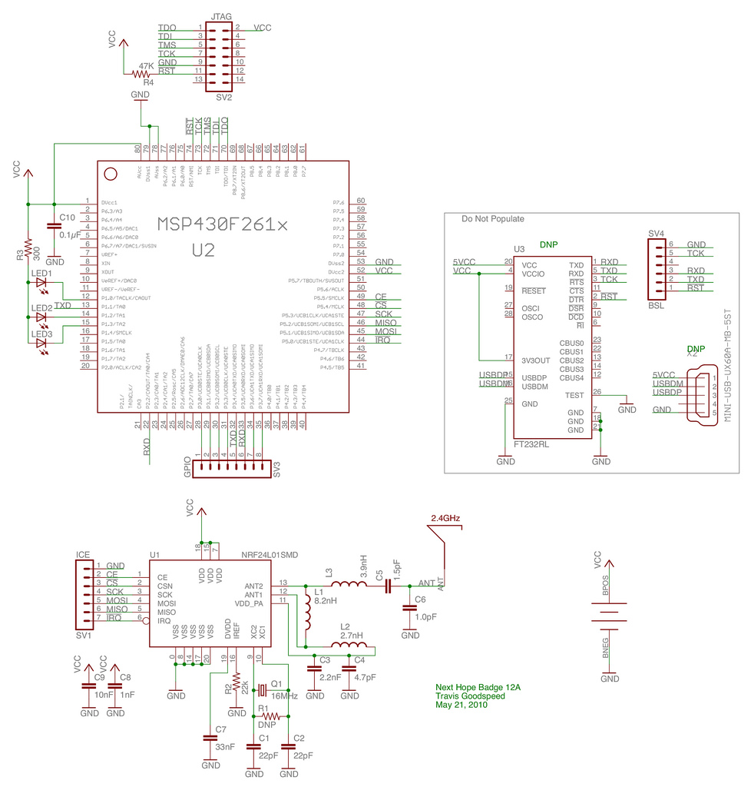

by Travis Goodspeed <travis at tnbelt.com>,
for use with or without a badge hacking kit distributed by Mitch Altman.
This kit is best used with the 80-pin MSP430F2618 model, so switching to that model is recommended prior to assembly.
The following instructions are for adding USB support to a Next Hope conference badge, model numbers of which are NHB12 and NHB12B. For further details see my article entitled Hacking the Next Hope Badge.
While these instructions are not terribly complicated, the kit is not intended for a first-time solderer. If you have never soldered before, then build a TV-B-Gone as practice before having someone help you assemble this kit. Additionally, some Unix or command-line Windows experience is necessary, as the tools involved do not have a GUI.
First, be sure that you have both a mini USB connector and an FT232RL chip, as pictured below. This are included in Mitch's kit.

Modify your badge by the following steps:
To reflash your badge's OpenBeacon firmware, grab the NHBadge project from subversion. The Unix command for this is ``svn co https://nhbadge.svn.sourceforge.net/svnroot/nhbadge''. (TortoiseSVN will retrieve the same URL for Windows users.)http://tinyurl.com/). Inside the nhbadge/dist path, one will find the latest Next Hope badge firmware along with Windows batch scripts for programming the badges. Unix users with a C compiler and GoodFET and instead run ``goodfet.bsl -e -p foo.hex'' to compile the firmware and flash a firmware image over USB.
To make things a bit easier, a ZIP file distribution for Windows users is available at http://goodserv.cis.upenn.edu/nhdist.zip. This is the exact file that was sent to the manufacturer, and was the file used on the production line to program these things.
To download the GoodFET firmware for either Unix or Windows, visit http://goodfet.sf.net/ and follow the SVN instructions. Once installed, you can flash the GoodFET firmware to the badge with either 'goodfet.bsl -e -p goodfet2618.hex' or 'GFBSL.EXE -e -p goodfet2618.hex'.
Once flashed with firmware, the badge will respond to 'goodfet.monitor info' ('GFMON.EXE info' on Windows) with its model number and clock calibrations.

This is the NHB12 schematic diagram. For modifications
